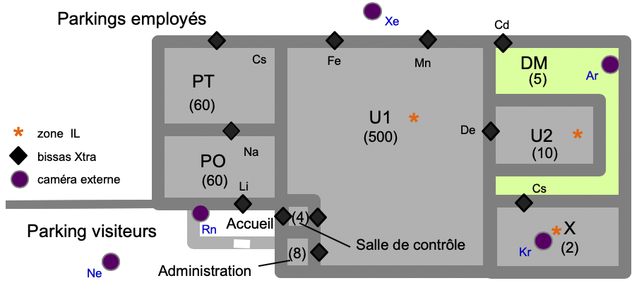
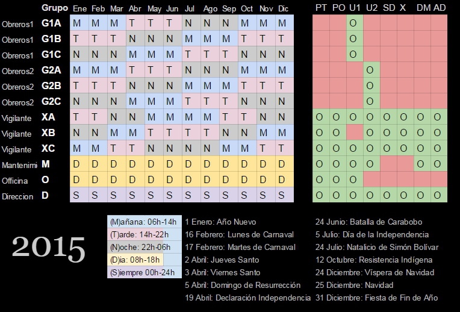

CR003 Réunion iAcces pour Chimiotis¶
- Date
02-17 15h-23h
- Type
Réunion
- Lieu
Morrocoy-Chimiotis
- PartiesPrenantes
ABI, JDR, PSO, AGO
- Organisateur
ABI
- Rapporteur
KWG
- Presents
ABI, JDR, PSO, AGO,
- Objectifs
Cas d’étude Usine de Morrocoy
Attention
Ce compte rendu est un document de travail et n’est pas contractuel.
- Nouvel intervenant, directeur de l’usine à Morrocoy :
Eliezer LAEMMEL (ELL) - Morrocoy, Chimiotis
Grâce aux contacts d’AGO, une visite du site chimique de Morrocoy a été organisée opportunément.
Chimiotis, la société gérante désire s’équiper de bissass pour son système d’accès sécurisé.
Il s’agit donc d’un prospect chaud pour iAccess.
Un premier plan sécurité a été créé à partir des informations fournies par Chimiotis.
Fig. 1 : Potentiel plan sécurité pour le site de Morrocoy¶
Contrairement au stade de Tokyo, le site Morrocoy n’accueille pas de spectateurs.
Un élément important concerne les règles à appliquer en cas d’incendie dans une zone.
Tous les points d’accès doivent être ouverts automatiquement vers l’extérieur dans les zones dites « Incendie Libre » (IL).
Dans les autres zones, un incident est envoyé à tous les gardiens.
Chaque gardien signale qu’il a bien reçu l’incident et peut ensuite consulter si des personnes sont présentes dans la zone et débloquer tel ou tel point d’accès.
Il faudra donc prendre en compte les systèmes à incendie et les interfacer avec iAccess.
Par ailleurs à première vue le nombre de groupes est a priori plus faible à Morrocoy qu’à Tokyo.
Le nombre de badgeurs par groupe va de 1 à 300 environ.
Les ouvriers font les 3 x 8 mais de manière relativement régulière.
Les membres de chaque groupe sont finalement assez stables.
En effet le personnel de l’usine ne change que rarement et les groupes sont basés sur des règles relativement stables dans chaque zone.
Ci-dessous le dernier plan d’autorisation fourni par l’administration de Chemiotis.
Fig. 2 : Plan d’autorisation (simplifié) pour le site de Morrocoy¶
Les autorisations aux zones sont présentées pour chaque groupe à droite.
A gauche sont représentées les périodes liées à ces autorisations.
Après discussion avec l’administration il apparait qu’il s’agit d’une version très simplifiée.
En effet l’usine devant tourner 24h/24h, 365j/365, des groupes d’ouvriers sont ajoutés pour les jours fériés et les week-ends.
Ces groupes ne sont pas représentés sur le planning annuel montré en CR003Fig2.
Ce planning est représentatif de ce qui se passe chaque année.
Les groupes du planning annuel sont homogènes par rapport aux zones autorisées.
Autrement dit, pour une période un groupe peut accéder toujours aux mêmes zones (cf. CR003Fig2).
En réalité, et selon un exemple donné par ELL, le groupe GY peut accéder à la zone PT en semaine de 8h à 12h pendant l’été.
Et GX peut accéder à la zone X le week-end de 16h à 23h de mars à avril.
Actuellement tous ces différents cas sont gérés de manière ad-hoc par les gardiens en poste aux points d’accès de chaque zone.
En pratique cette gestion est un peu aléatoire et se base sur le bon-vouloir des gardiens et des employés.
Il faudra absolument définir des autorisations plus fines dans iAccess pour représenter ce genre de périodes.
Une autorisation doit être un triplet (groupe, période, zone).
Par exemple, en reprenant l’exemple donné par ELL, on doit pouvoir définir deux autorisations comme suit.
Tab. 1 : Exemple ELL 01-06¶ Groupe
Période
Zone
GY
xxxxxxJASxxx LMMJVxx 08:00-12:00
PT
GX
xxMAxxxxxxxx xxxxxSD 16:00-23:00
X
Les autorisations sous forme de triplets pourraient aussi convenir a priori pour le stade de Tokyo en 2020.
Il s’agit en effet d’une représentation générale et sans doute satisfaisante.
Il a été décidé de partir a priori sur ce modèle d’autorisation pour iAccess.
Dans le cas de Morrocoy, il semble qu’un seul administrateur pourrait gérer tous les groupes.
Cela contraste avec le site de Tokyo où plusieurs administrateurs devront gérer des groupes différents et inversement ou un même groupe pourra être géré par des administrateurs différents.
Actuellement l’usine est gardée par 60 gardiens, 24/24.
Avec iAccess on estime que 4 gardiens serait suffisant, d’où 12 en 3x8.
Comme pour les autres sites, le serveur de contrôle serait installé dans la salle de contrôle.
Chemiotis émet également le besoin de pouvoir recevoir des visiteurs via des badges courts.
Dans ce cas les badges courts pourraient être distribués en direct à la réception et utilisés immédiatement.
Actuellement il n’y a aucun système pour les badges courts à Morrocoy.
Il s’agit simplement d’un coup de téléphone donné aux gardiens, ce qui n’est évidemment pas sécurisé.
Chemiotis souhaiterait par contre disposer de l’historique d’accès.
Chemiotis voudrait contrôler les heures de présences dans l’usine des employés.
La conservation de l’historique des événements étant imposée par la réglementation du Venezuela, cette fonctionnalité devra être intégrée dans iAccess.
Un web service permettra à des systèmes externes (e.g. systèmes de paye / de contrôle de présence) d’importer les événements d’accès de iAccess (horaire d’entrée pour chaque point d’accès).
Ce web service devra être sécurisé pour des aspects de confidentialité mais aussi de sécurité (e.g. heures d’accès des gardiens, etc).
A Tokyo, le service web d’export sera utilisé entre autres par les services commerciaux pour déterminer les billets vendus n’ayant pas été utilisés.
Après discussion avec Competis, l’historique d’accès est également nécessaire pour Tokyo vu le grand niveau de sécurité attendu au Japon.
En conclusion, la visite sur le site de Morrocy a été très instructive.
Il correspond bien aux fonctionnalités de base que devra permettre iAccess à terme, même s’il n’est pas développé immédiatement.
Sa conception ne sera pas demandée à l’IM2AG.
La prochaine réunion aura lieu comme prévu à Berlin - Bissis.